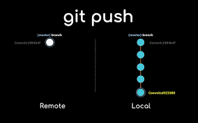

Fuerza Git

La fuerza de Git radica en su capacidad para gestionar versiones de código de manera eficiente y segura. Aquí tienes algunos conceptos clave:
- Control de versiones: Git permite llevar un registro de todos los cambios realizados en el código.
- Colaboración: Facilita el trabajo en equipo al permitir que múltiples desarrolladores trabajen en el mismo proyecto sin conflictos.
- Ramas: Permite crear ramas para desarrollar nuevas características o corregir errores sin afectar la rama principal.
- Deshacer cambios: Puedes revertir cambios fácilmente utilizando comandos como
git reset.
Git es una herramienta poderosa que mejora la productividad y la calidad del desarrollo de software.
⬅️ Volver al inicio
Siguiente ➡️